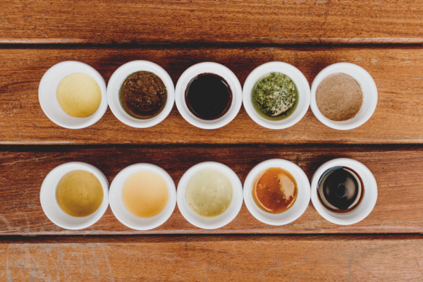

Người Việt ta dường như mở mắt chào đời đã thấy trà, uống trà trọn đời và cho đến chết vẫn còn được tẩm liệm với trà (chưa kể “được” con cháu pha trà cúng trong các dịp Tết, giỗ). Thế nhưng viết về trà thì gần như chưa có ai viết cả. Tìm tài liệu trong sách xưa, tôi tìm từ các trứ tác của nhà học giả lỗi lạc Lê Quý Đôn (người đã từng ghi chú kĩ lưỡng hàng trăm loại lúa gạo trồng ở Việt Nam trong bộ Bách Khoa Vân Đài Loại Ngữ) cho đến toàn bộ trứ tác của gia đình danh sĩ họ Ngô (Ngô gia văn phái) trở lên các tác giả thời kỳ Lý Trần… cũng chỉ thấy ghi vô cùng sơ lược. Cho đến các tác giả cận đại, khi mà trà đã phổ biến và nổi tiếng khắp thế giới với nhiều bộ sách lớn và quan trọng viết về trà, thì tình cảnh cũng không khác.
Trong thi văn thì trái lại, trà luôn được nhắc nhở. Tuy nhiên phần lớn vì nhiều tài liệu và giàu óc tưởng tượng, nhiều thần thoại tưởng tượng đã nhiều khi được biến thành giai thoại. Có lẽ độc giả hơn một lần, đâu đó, được đọc về các chuyện “Trà Tiên”, “Trảm Mã Trà”, “Hầu Trà”… có nhà văn còn cam đoan rằng đã từng được một bạn Tàu nào đó cho uống một thứ trà: “Chỉ cần một chén nhỏ thôi là thức ăn đầy bụng sau một đại tiệc bỗng tiêu tan cả, bụng lại thấy trồn và dường như sẵn sàng ăn hết cả một con heo quay…”. Hoặc “gắp một miếng thịt bỏ vào chén trà, một phút sau thịt tan rã cả ra”…
Trở lại chuyện trên, tôi muốn nói trà là một nghệ thuật lớn. Khởi từ nơi trồng, địa hình, khi núi gió mưa nắng tuyết nhào nặn thành lộc non lá nõn, cho đến khi pha trà, uống trà, đều là một nghệ thuật. Mà mỗi chặng, mỗi nhịp đều phải đạt được cái chân nghệ thuật thì cái đích cuối cùng: Một ly trà ngon, mới thật là viên mãn. Đâu phải cứ trà Vũ Di là phải ngon.
Vì vậy trong tất cả các sản phẩm của nhân sinh, trà có thể được coi là một nghệ thuật tinh vi nhất. Nó không giống như các sản phẩm “Cam Xã Đoài”, “Nhãn Hưng Yên”… Trà Vũ Di chẳng hạn, cùng một ngọn núi cùng một vườn trà, người ta có hàng trăm loại trà khác nhau. Cùng một vườn nhé, trà “Đông pha” bao giờ cũng hơn trà “Tây pha” vì hướng Đông nhận tia nắng mặt trời trước, phản ứng sinh trưởng của cây trà hướng đông khác hẳn cây trà ở phía Tây. Rồi cùng một cây trà thôi nhé, nên nhớ cây trà được hái nhiều lần nhưng quí nhất là loại trà “Tiền Minh”, đó là loại trà vừa hái khi những tia nắng đầu tiên của mùa Xuân vừa làm tan tuyết, làm căng nhựa sống của muôn cây cỏ sau mùa đông dài. Nhưng cùng hái một lần lại còn phải chia làm nhiều loại tùy theo búp trà. Đó là trà trắng (Bạch Trà: toàn lộc non) hay “trà một lá” (búp trà và một lá non), “hai lá” hoặc “ba lá”… Trà thượng hạng lại phải được hái khi còn sương, khi mặt trời lên, sương tan là phải ngừng ngay. Cách hái cũng đòi hỏi một nghệ thuật, ngày trước các thiếu nữ hái trà phải để móng tay dài (sau này họ dùng một loại lưỡi lam gắn vào hai ngón tay), để móng tay cắt đứt lộc non mà ngón tay, có sức nóng của cơ thể, không được chạm vào, làm như sức ấm của ngón tay có thể làm thay đổi phẩm chất của trà…
Hái trà xong, lại còn qua giai đoạn tẩm… rồi đến khi có được trà, có được tay “trà thủ” pha trà đi nữa, trăm loại nước lại có trăm loại trà khác nhau. Lại còn Trà Cụ: Ấm tách…
Ấy chưa kể đến tác nhân cuối cùng: Người uống (chưa nói đến chỗ uống, thời gian uống, khách uống…). Nghệ thuật là một cái gì cần để tâm hồn, tâm não và thời gian tập luyện. Cùng một bản đàn mà một cái tai không được huấn luyện thì làm sao phân biệt được người đàn là một tay mơ, một sinh viên trường âm nhạc vừa tốt nghiệp hay một nhạc sĩ chuyên nghiệp, hoặc một cầm thủ cỡ Horowitz1?
Mỗi lần được thêm một bài văn, một quyển sách viết về trà, tôi lại có một cảm giác bứt rứt. Mỗi lần nghe thân hữu, phần đông là các vị trọng tuổi, nói chuyện về trà, cảm giác này lại đến nặng hơn. Rồi thế nào cũng phải viết một quyển sách về trà… tự hứa và đã hứa với một số thân hữu. Nhưng chẳng có cách nào hoàn thành như dự tính. Đời sống quanh đây bận rộn trăm chiều. Trong khi đó lại có những tác phẩm khác quan trọng hơn tôi đã viết xong hoặc gần xong, đang cần để hết thời giờ chăm sóc.
Nhưng rồi cuối cùng cuốn sách cũng được hoàn thành. Cũng là một cơ hội tâm tình với bạn tri âm (trà), một người bạn vô hình nhưng luôn luôn gần gũi trong những lúc vui buồn, nhất là trong những đêm cô đơn tha hương.
Nhưng khó khăn không phải là chấm dứt. Viết gì về trà? Không quá dài (để in không nổi) mà có quá nhiều để viết. Viết một cách nghiêm túc theo sách giáo khoa, kinh viện chăng? Độc giả sẽ chán nản. Nhưng cũng không thể viết theo kiểu phóng bút văn chương được… Sau cùng quyển Trà Kinh được thành hình.
1 Vladimir S. Horowitz (1903 - 1989): nghệ sĩ dương cầm người Mỹ gốc Nga. Ông được tôn vinh là một trong những nghệ sĩ dương cầm xuất chúng nhất thế kỷ 20. [1]